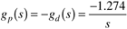
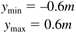
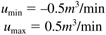
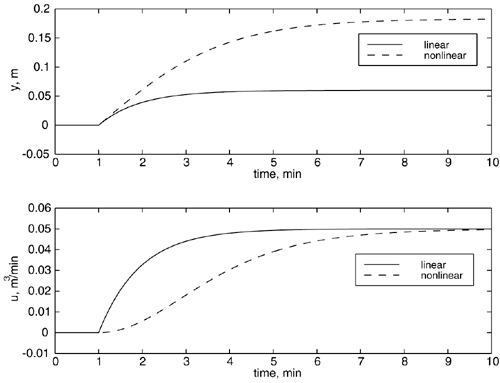
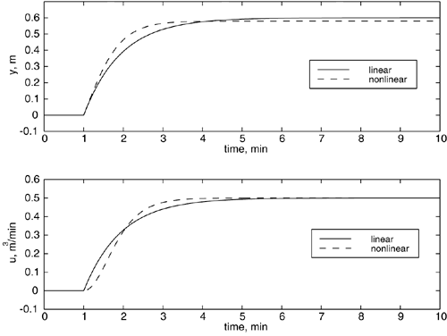
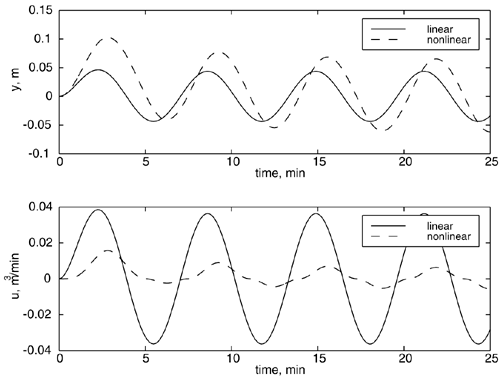
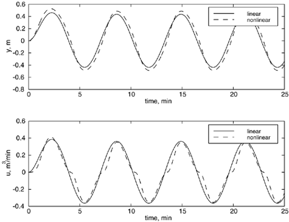

| [ Team LiB ] |
|
M10.4 Numerical ExampleConsider a surge vessel that has a diameter of 1 m, and a maximum height of 2 m, with low- and high-level alarms set at 20% and 80%. Also, assume that the height setpoint is 1 meter, and the steady-state flow rate is 0.5 m3/min. The constant cross-sectional area is then 0.785 m2. Since the steady-state flow rate is 0.5 m3/min, assume that the inlet flow rate can vary between 0 and 1 m3/min. You should show that the process and load disturbance transfer functions are  Since the physical variable minimum and maximum alarm heights are 0.4 and 1.6 m, respectively, in terms of deviation variables, the minimum and maximum heights are  So, DH = 0.6 m. The minimum and maximum manipulated variable values are  So, DL = 0.5 m3/min. From Equations (M10.5) and (M10.7), we find kc = -0.833 m2/min and kc0 = -1.389 m/min. Step DisturbancesCompare the step responses of the linear and nonlinear controllers to a small step disturbance of 0.05 m3/min and a large step disturbance of 0.5 m3/min. For a small step change in the load disturbance (inlet flow rate), the linear and nonlinear controllers are shown in Figure M10-2. Notice that the manipulated input changes more slowly for the nonlinear controller. The minor disadvantage is that the offset is larger for the nonlinear controller, as designed. This is not a real problem, as the offset is small compared with the capacity of the vessel. Figure M10-2. Response to a small step in inlet flow rate (0.05 m3/min). Responses to a large step in the inlet flow rate are compared in Figure M10-3. For this case, these responses are similar and there is not much incentive to use the nonlinear strategy. Figure M10-3. Response to a large step in inlet flow rate (0.5 m3/min). Sinusoidal DisturbancesConsider a sinusoidal disturbance with an amplitude of 0.05 m3/min and a frequency of 1/min. The linear and nonlinear strategies are compared in Figure M10-4. Clearly, there is an incentive for nonlinear control, since the manipulated variable does not change nearly as much for the nonlinear case as for the linear case. Figure M10-4. Response to a small amplitude (0.05 m3/min) sinusoidal inlet flow rate disturbance. The responses to large-magnitude sinusoidal disturbance with an amplitude of 0.5 m3/min and a frequency of 1/min is shown in Figure M10-5. In this case, there is not much incentive for the nonlinear control strategy. Figure M10-5. Response to a large-amplitude (0.5 m3/min) sinusoidal inlet flow rate disturbance. You should show that a high-frequency disturbance is rejected very well by the nonlinear strategy. Additional SimulationsConsider the large-magnitude sinusoidal disturbance shown in Figure M10-5. Show that doubling the amplitude of the disturbance leads to saturation of the manipulated variable, and to violation of the high- and low-level alarms. |
| [ Team LiB ] |
|